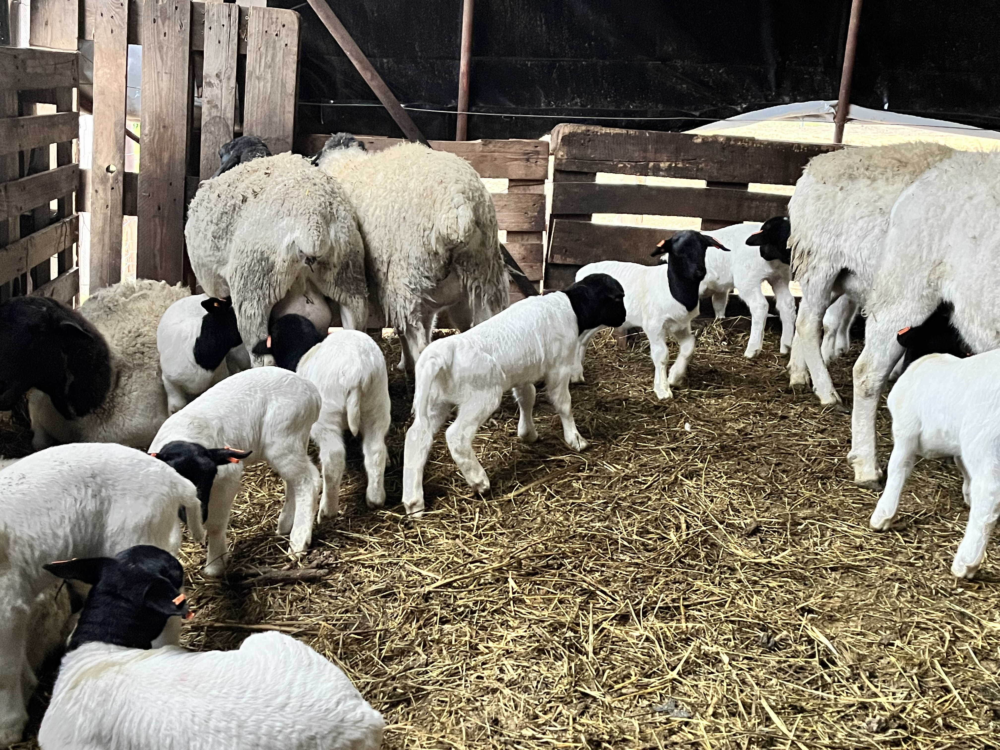

év tapasztalat
értékesített állat
ország
32 évesen, több mint 10 év tapasztalattal dolgozom Dorper juhokkal. A célom egy stabil, megbízható és erős genetikai állomány felépítése.

Nem csak állatokat adunk el, hanem tudást és támogatást is. Vásárlóink hosszú távú partnereink.